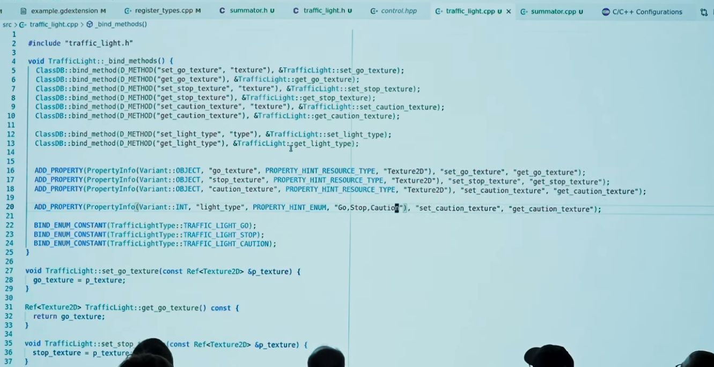

C++
About
Versions
-
Versions .
Characteristics
-
Default access control: Private.
Building
Classes
Operator ( :: )
-
Used to access the content of a
class,struct,scope, ornamespace. -
The symbol
::is used like an "address/directory", so using:-
MyClass::variable_name, refers to a variable of the classMyClass. -
::variable_name, refers to a variable in the global scope.
-
-
Writing
using ScopeNameexposes the content of the desired scope in the current scope.
GameDev
Godot
Projekt JENOVA
-
Is a comprehensive series of extension libraries for the Godot 4 Game Engine that brings fully-featured C++ scripting directly into the Godot Editor. It allows the use of modern C++20 standards within the Godot Engine, similar to GDScript.
-
About .
-
Apparently, it's Windows only.
GDExtension
-
Tutorial .
-
The tutorial was made with Godot 4.3-stable.
-
The presenter is very nice. He made the Godot Netcode Rollback extension.
-
{18:20 -> 26:55}
-
Creation of a class called Somator, which will be a new class used inside Godot with GDScript.
-
The class is simply created with
count = 0, sums values, and has a function to return the total.
-
-
In other words, it’s a mix between C++ and GDScript.
-
It's basically a plugin, ~kinda.
-
-
{26:55 -> 1:14:33}
-
Creation of a Traffic Light.
-
It's a more complex class, with exports, signal emission, and virtual methods.
-
-
{1:14:33 -> 1:25:30}
-
Creation of a Player.
-
In this case,
_physics_processis used, since the logic will be completely done in C++, not GDScript.
-
-
Watched the entire video. It’s a very good video.
-
Important things explained in the video
-
You cannot use C++
newfor Godot classes, but must usememnew. -
"If you don’t use
Ref< >for all classes that inherit Godot'sRefCounted, you will have memory leaks."Ref<Texture2D> my_tex; -
_bind_methods()must be used in classes:-
 .
-
-
He prefers using
_notification()instead of_ready, since setting something in C++_readymay conflict with GDScript_ready.-
Makes sense, since it's an override of a virtual function.
-
-
"By default, all classes created with GDExtension will work in the editor and the game (like tools). This is the default for all C++ classes."
-
Signals:
-
Creating:
-
ADD_SIGNAL(MethodInfo("light_changed"), PropertyInfo\(Variant:\:INT "new_light"));
-
-
Emitting:
-
Signals work as in Godot 3, needing to be called via
emit_signal("name", parameters)
-
-
-
"In C++ there are no real properties; everything is done via setters and getters."
-
"It's verbose enough, it's hard to keep in your memory, that's why I'm always copying code from old projects."
-
Very convenient for creating documentation; it’s highly automated, generating templates.
-
GDExtension files can be placed anywhere in the project and Godot will find them. They don't need to be in the Addon folder.
-
C# code cannot properly access classes made with GDExtension.
C++ Modules
-
We recommend C++ modules in cases where GDExtension isn't enough:
-
C++ modules provide deeper integration into the engine. GDExtension's access is not as deep as static modules.
-
You can use C++ modules to provide additional features in a project without carrying native library files around. This extends to exported projects.
-